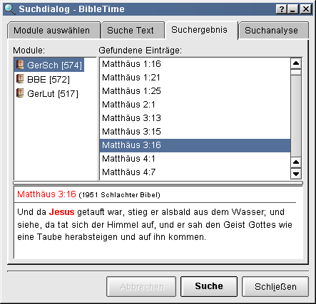

Teile der Anweisungen zur Benutzung von GCC Regulären Ausdrücken in Dokumente Durchsuchen ist übernommen aus den Hilfedateien der Microsoft Windows® Version von Sword
Sie können in einem Dokument suchen indem Sie mit der rechten Maustaste auf den Dokumentennamen innerhalb der Hauptgruppe klicken und dann Durchsuche gewählte Module auswählen. Durch drücken von Umschalt- oder Strg währende dem klicken auf andere Modulenamen können Sie mehr als eines auswählen. Gehen Sie in der selben Art und Weise vor, um in allen gewählten Modulen zu suchen.


Die Textbox in dem Feld Sucheinstellungen ist der Ort, wo Sie den zu suchenden Text eingeben können. Er kann aus einem oder mehreren Worten bestehen, oder auch aus Wortteilen(trennen Sie Wörter und Wortteile mit Leerzeichen) oder Regulären Ausdrücken bestehen. Sie können die Radio Buttons verwenden, um die Suche im "Mehrere Wörter", "Exakte Suche" oder "Reguläre Ausdrücke" Modus auszuführen. Mit einer Checkbox können Sie die Unterscheidung zwischen Groß- und Kleinbuchstaben an- und ausschalten.
Tip
Hier funktioniert Drag&Drop, Sie können Verse und Lesezeichen in die Text-Eingabebox ziehen. Sie können Text in die Zwischenablage kopieren und in die Eingabezeile einfügen.
Klicken Sie auf die GROß/klein Box, um die Unterscheidung an oder aus zu schalten. Wenn die Box angeschaltet ist, wird die Suche nur Verse finden, in denen der Text genauso wie in der Texteingabezeile auftaucht. Falls die Box ausgeschaltet ist, wird die Suche Treffer finden, sie sich auch in der Groß- und Kleinschreibung unterscheiden. Um "HERR" jedoch nicht "Herr" oder "herr" zu finden, wählen Sie die Option aus. Um mit "HERR" und "Herr" "herr" zu finden, lassen Sie die Option ausgeschaltet.
Wenn "Mehrere Wörter" ausgewählt ist, wird die Suche alle Verse finden, die alle Worte (oder Wortteile) enthalten. Die Position und Reihenfolge der The position Worte spielt keine Rolle. Wenn alle Worte in einem Vers enthalten sind, wird er in der Liste der gefundenen Verse angezeigt. Eine Suche nach "prove cause" wird 1 Mose 21:25 finden, "And Abraham reproved Abimelech be cause of a well of water..." Es reicht also sogar, wenn die gesuchten Worte in den Worten des Verses enthalten sind.
Wenn Genaue Suche ausgewählt wurde, wird die Suche alle Zeilen (oder Verse) finden, die genau den in der Eingabezeile eingegebenen Text unter Einbezug aller Leerzeichen enthalten. Der gesuchte Satz muss nicht an einer Wortgrenze starten. Eine Suche nach "amt begehrt" wird 1. Thimotheus 3:1 finden: "Das ist gewißlich wahr: So jemand ein Bischofsamt begehrt, der begehrt ein köstlich Werk."
Kein Suchbereich schaltet den Suchbereich Tab aus. Das ganze Dokument wird durchsucht.
Letztes Suchergebnis Die neue Suche wird nur innerhalb der Verse suchen, die in der letzten Suche gefunden wurden.
Suchbereich benutzen Die neue Suche wird innerhalb des angegebenen Suchbereiches ausgeführt.
Suchbereich benutzen Die neue Suche wird innerhalb des angegebenen Suchbereiches ausgeführt.
Wenn Kein Suchbereich ausgewählt ist, und die KJV Bible nach "Jesus" durchsucht wird, werden 939 Verse gefunden. Wenn dann Letztes Ergebnis ausgewählt ist, und eine weitere Suche nach "Christ", durchgeführt wird, werden 257 Verse der 939 Treffer der letzten Suche übrigbleiben. Wenn dann noch (Letztes Suchergebnis bleibt ausgewählt) nach "Lord" gesucht wird, bleiben von den 257 Versen noch 106 übrig. Alle diese 106 Verse enthalten "Jesus", "Christ" und "Lord". Alle diese Verse enthalten "Jesus", "Christ" und "Lord".
Bereiche bearbeiten - Sie können obere und untere Grenzen für die Suche eingeben mit left mouse button Bereiche beabeiten Button.

Die voreingestellten Einträge zeigen Beispiele der verlangten Syntax.
Eine Anzahl von angepassten Bereichen wurde zur Verfügung gestellt.
Wenn Kein Suchbereich ausgewählt ist, und die KJV Bible nach "Jesus" durchsucht wird, werden 939 Verse gefunden. Wenn dann Letztes Ergebnis ausgewählt ist, und eine weitere Suche nach "Christ", durchgeführt wird, werden 257 Verse der 939 Treffer der letzten Suche übrigbleiben. Wenn dann noch (Letztes Suchergebnis bleibt ausgewählt) nach "Lord" gesucht wird, bleiben von den 257 Versen noch 106 übrig. Alle diese 106 Verse enthalten "Jesus", "Christ" und "Lord". Alle diese Verse enthalten "Jesus", "Christ" und "Lord".
Tip
Drag & Drop funktioniert hier; Sie können Versreferenzen und Lesezeichen in die Bereichsbox fallen lassen, ebenso können Sie normalen Text einfügen.
Suchergebnis - Dies zeigt Ihnen - nach Modulen geordnet - wie viele Treffer des gesuchten Textes gefunden wurden. Klicken auf das Dokument wird die Liste der Referenzen öffnen. Das Klicken auf eine Referenz öffnet diese im Fenster darunter. Ziehen Sie die Referenz und lassen Sie diese auf einem Dokument in der Hauptgruppe fallen, um dieses Modul an der gewünschten Stelle zu öffnen.
Tip
Hier funktioniert Drag&Drop, wie bei anderen Kommentaren und Bibeltexten.
Tip
Wählen Sie eine Versnummer und ziehen Sie diese in die Hauptgruppe um Lesezeichen anzulegen,
Tip
Wählen Sie einen Vers aus und ziehen Sie ihn auf ein ungeöffnetes Modul, um dieses zu öffnen und damit dieses die gewünschte Stelle anzeigt (Nur für Bibeln und Kommentare).
Tip
Wählen Sie einen Vers aus und ziehen Sie diesen auf ein geöffnetes Dokument, um das Anzeigefenster an diese Stelle springen zu lassen (Nur in Bibeln und Kommentaren).
